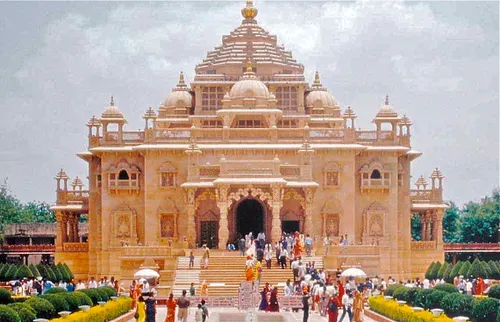

Places to visit
Gujarat has various visitor attractions including within the city.
Gujarat
Gandhinagar
GandhinagarThe capital city of Gujarat, Gandhinagar is named after the Father of the Nation, Mahatma Gandhi. The captivating city is just 25 km away from the financial capital of Gujarat, Ahmedabad. Gandhinagar boasts of being the greenest city in Asia and after Chandigarh, the most well-planned city in India. It is also one of the cleanest cities in India with an array of things to do in the city. The Akshardham Temple is the most famous spot in Gandhinagar which is visited by thousands on a daily basis. Besides this, Sarita Udyan, the 3D and hi-tech Dandi Kutir (Salt Mount) Museum, Punit Van, Sant Sarovar Dam, Swarnim Srushti Water Park, Indroda Nature & Fossil Park (Jurassic Park of India), Vithalbhai Patel Bhavan, and Blackbuck National Park are some of the best spots in the city for visitors.
Ahmedabad
AhmedabadAhmedabad or Amdavad (as locals prefer calling this city as) is India's first UNESCO World Heritage City. Situated on the banks of the River Sabarmati, Ahmedabad is the commercial capital of Gujarat and regarded as one of the fastest-growing cities in India. It’s 500 km away from Mumbai with over 70 direct trains leading to this city. Ahmedabad Junction is one of India’s busiest railway stations. It’s connected directly with Delhi, Chennai, Bengaluru, and other prominent cities in India. It is also one of India’s top tourist destinations with over 50 places of interests for travelers. Historic monuments, sublime architecture, astonishing museums, and well-planned gorgeous lakes make Ahmedabad famous. Sabarmati Ashram, Kankarai Lake, Jama Masjid, Akshardham Temple, Adalaj Stepwell, Huthee Singh Jain Temple, ISKCON Temple, Vintage Car Museum, Nalsarovar Bird Sanctuary, Swaminarayan Mandir, and Sardar Patel National Memorial are some of the best places to visit in Ahmedabad.
Vadodara
Vadodarapreviously known as Baroda, is yet another important city in Gujarat. It is the second most important place in Gujarat, after Ahmedabad, from a tourism point of view. Filled with colors and exuberance, Vadodara is the best place for lovers of art, tradition, culture and family life. At a distance of 400 km from Mumbai, Vadodara is a place you should look forward to visiting at least once in your lifetime. There are numerous things that you can do here. You can admire the structural brilliance of Laxmi Villas and Makarpura Palaces, Explore the hidden gems of Baroda including Champaner-Pavagadh Archaeological Park, EME Temple, Vadodara Museum and Picture Gallery, Sayaji Gardens, Nandalaya Haveli, and Maharaja Fatesingh Museum.
Junagadh
Junagadhis yet another prominent tourist destination in Gujarat. At a distance of 850 km from Mumbai, Junagadh has everything in store to mesmerize you. It is well known for its history, amazing architecture, religious places, and sublime beaches which you can explore to get the most out of your visit. The best part of visiting Junagadh is Sasan Gir Wildlife Sanctuary or the Gir National Park. This huge national park is the only home to the endangered species of big cats, Asiatic Lions.
Kutchh
KutchhThe beautiful city of Kutchh is a remarkably famous tourist spot in Gujarat. What makes Kutch world famous? The Great Rann of Kutch. It is during the Rann Mahotsav, millions of people visit Kutch to experience the elegance, colors, tradition, and cultural essence of typical Gujarat. Kutch is the largest district of Gujarat spanning over 45,000 sq. km. Beside the Rann of Kutchh, you can visit the Aaina Mahal which is an 18th-century palace, built on the lines of Italian gothic art. Secondly, Kalo Dungar is the perfect place for hiking to get amazing views of the Rann of Kutch, along with the India-Pakistan border stretching in the distance. Wild Ass Sanctuary, Dholavira, and Ahmedpur Mandvi Beach are some of other famous tourist spots in Kutchh.
Bhuj
BhujNext on our list is the historic city of Bhuj. At a distance of 850 km from Mumbai, Bhuj is the ideal launchpad for the craft and archeology lovers. Here, you get to explore the famous Aina Mahal, Prag Mahal, Hamirsar Lake, in addition to the Bhujodi Village. Bhuj is one of the most captivating cities in Gujarat with dozens of things to surprise you. Trekking at Bhuji Hills is probably the best thing that you can do here to experience adventure. Bhujia fort at top of the hills is a stunning historic structure that offers a sublime view of the city from the top. BAPS Swami Narayan Temple and Vijay Vilas Palace are beautifully designed architecture which will simply leave you speechless.
Porbandar
Porbandaris a remarkably popular tourist destination in Gujarat. The city is more popular for being the birthplace of the Father of the Nation, Mahatma Gandhi. This is an ideal place for those who love history, ancient architecture, craftsmanship, shopping, and eating. This place is filled with numerous temples that are equally well complemented by serene beaches and stunning architecture. Amongst the most popular ones, Ghumli is the perfect place to spend time with ancient architecture. Despite centuries, these structures have managed to stand tall against all odds. The smallest bird sanctuary in Gujarat houses over 150 different species of birds. Huzoor Palace, Madhavpur Beach are other spots that are popular amongst tourists.
Jamnagar
JamnagarYou must have heard Gujaratis saying “Java Dhyo Ne (let it go)”. This is one of the most used phrases that originated in Jamnagar. This is the beauty of the city and talks a lot about its culture. Jamnagar is the “Jewel of the Kathiyawad”. It’s popularly known as the oil city in Gujarat. It is yet another finest tourist destination located in the western parts of the state. What makes Jamnagar so popular amongst tourists? Well, sublime architecture, colorful markets, broad roads, amazing gardens, wide squares, and absolutely delectable food items is what Jamnagar famous for. Lakhota Palace, Bhujio Kotho, Khajadiya Bird Sanctuary, Narara Marine National Park, Bal Hanuman Mandir, Balachadhi Beach, and Pratap Vilas Palace are some of the well-known spots in Jamnagar.
Rajkot
RajkotThe city of Rajkot is one of the most colorful cities in Gujarat that offers a wide array of attractions for tourists. It is also one of the fastly emerging cities in India. With modern architecture, zoological parks, wildlife sanctuaries, museums, and ancient caves are the talk of the town. The Rampara Wildlife Sanctuary in the Khajadiya village is the best place in Rajkot for sighting wild animals and rare species. Gandhi no Delo, Rotary Midtown Doll Museum, Watson Museum, Pradyuman Zoological Park, Lal Pari Lake, BAPS Shri Swaminarayan Mandir, Jagat Mandir, and Prem Mandir are something that you cannot miss during your visit to Rajkot.
Dwarka
DwarkaThe land of Shri Krishna’s empire, Dwarka was once an island. During the time of Lord Shri Krishna, some 5000 years ago, its is believed that he fled Mathura with his people, and made this inhabitable land home. In the middle of the Arabian Sea, Lord Krishna settled a beautiful city, that many believe was made of gold. Then when he left this earth, by some stroke of misfortune, his children and clansmen, in drunken rage, fought and drowned all that was worthy. Today, Dwarka is a city that worships Lord Krishna as Dwarkadhish — the king of Dwarka. And underwater excavations do recover artefacts, pots, pillars and such that really are made of gold. With its temples, rocky coastal lines, beaches and markets, Dwarka is a beautiful tourist spot in North Gujarat.